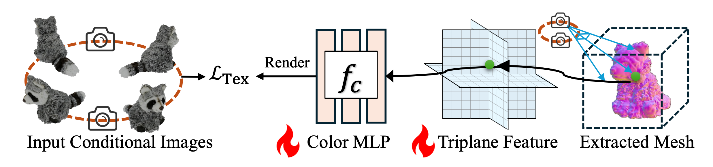

We propose a novel approach for 3D mesh reconstruction from multi-view images. Our method takes inspiration from large reconstruction models like LRM that use a transformer-based triplane generator and a Neural Radiance Field (NeRF) model trained on multi-view images. However, in our method, we introduce several important modifications that allow us to significantly enhance 3D reconstruction quality. First of all, we examine the original LRM architecture and find several shortcomings. Subsequently, we introduce respective modifications to the LRM architecture, which lead to improved multi-view image representation and more computationally efficient training. Second, in order to improve geometry recon- struction and enable supervision at full image resolution, we extract meshes from the NeRF field in a differentiable manner and fine-tune the NeRF model through mesh rendering. These modifications allow us to achieve state-of-the-art performance on both 2D and 3D evaluation metrics, such as a PSNR of 28.67 on Google Scanned Objects (GSO) dataset. Despite these superior results, our feed-forward model still struggles to reconstruct complex textures, such as text and portraits on assets. To address this, we introduce a lightweight per-instance texture refinement procedure. This procedure fine-tunes the triplane representation and the NeRF’s color estimation model on the mesh surface using the input multi-view images in just 4 seconds. This refinement improves the PSNR to 29.79 and achieves faith- ful reconstruction of complex textures, such as text. Additionally, our approach enables various downstream applications, including text/image-to-3D generation.
Figure 1: Overview of our proposed approach for 3D reconstruction. Our pipeline consists of a convolutional decoder E, a transformer-based triplane generator, T, and a NeRF-based triplane decoder that contains two MLPs, fc and fd, for color and density prediction, respectively. In practice, the triplane resolution is set to 256, and the mesh representation has a grid size resolution of 256.
Figure 2: Texture refinement for extracted meshes.We refine the texture by fine-tuning the triplane feature of the asset and the color MLP using the input images.
@misc{zhuang2024gtr,
title={GTR: Improving Large 3D Reconstruction Models through Geometry and Texture Refinement},
author={Peiye Zhuang and Songfang Han and Chaoyang Wang and Aliaksandr Siarohin and Jiaxu Zou and Michael Vasilkovsky and Vladislav Shakhrai and Sergey Korolev and Sergey Tulyakov and Hsin-Ying Lee},
year={2024},
archivePrefix={arXiv},
primaryClass={cs.CV}
}